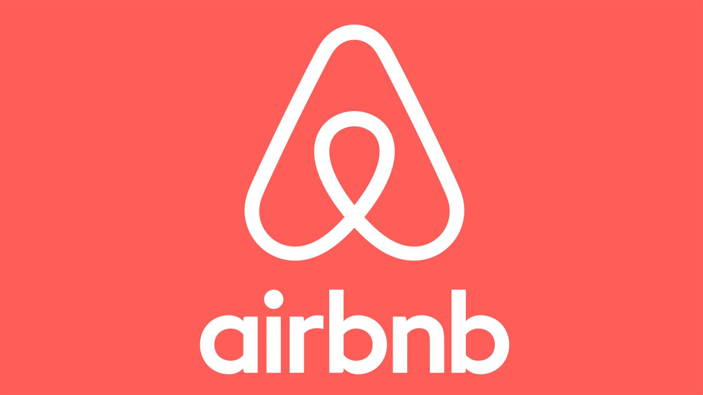
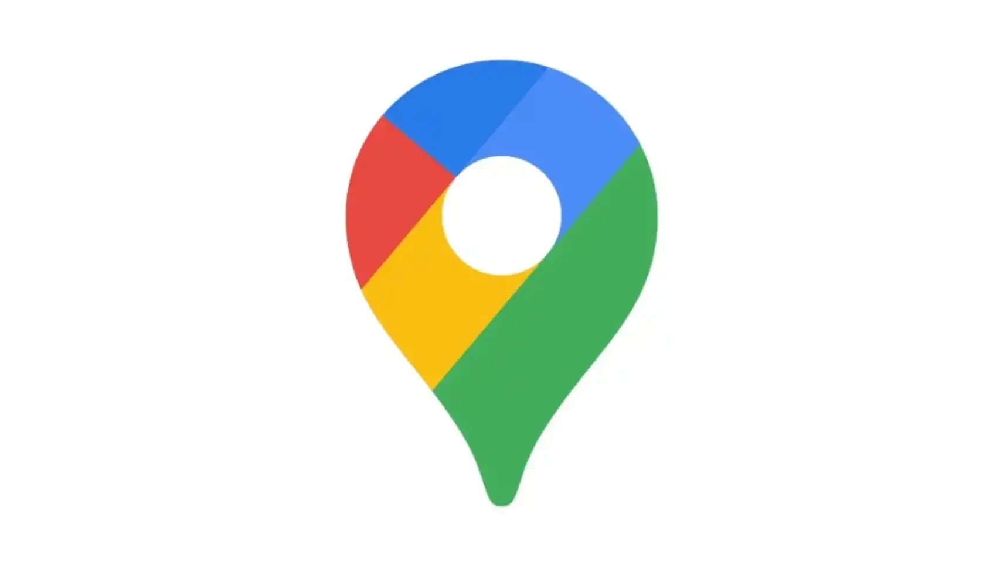
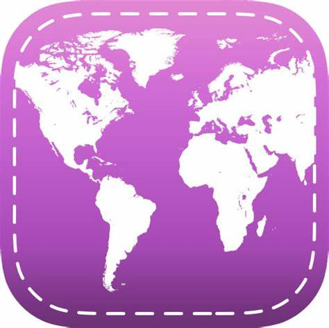

Transport
Skyscanner
Skyscanner to znacznie więcej niż tylko aplikacja do porównywania cen lotów, hoteli i wynajmu samochodów. Jest to prawdziwy kompan podróży, który zapewnia podróżnym inspiracje, wskazówki i narzędzia potrzebne do zorganizowania idealnej wyprawy. Dzięki swojej intuicyjnej funkcjonalności i szerokiej gamie opcji wyszukiwania, Skyscanner pomaga podróżnym znaleźć najlepsze oferty na loty i zakwaterowanie, a także dostarcza cenne informacje o miejscach wartych odwiedzenia oraz atrakcjach turystycznych. Niezależnie od tego, czy planujesz spontaniczną eskapadę na weekend, czy też starannie zaplanowaną podróż życia, Skyscanner będzie Twoim niezawodnym przewodnikiem w podróży.
Rome2rio
Rome2rio to niezastąpiona aplikacja dla każdego podróżnego, pragnącego odkrywać nowe miejsca bez względu na odległość czy lokalizację. Od planowania podróży po porównywanie różnych opcji transportu, Rome2rio oferuje kompleksowe wsparcie w organizacji wyprawy. Niezależnie od tego, czy podróżujesz lokalnie czy międzynarodowo, Rome2rio dostarcza szczegółowe informacje na temat tras kolejowych, lotniczych, autobusowych, morskich i innych, abyś mógł znaleźć najlepsze połączenia dla swojej podróży. Co więcej, dzięki funkcji planowania trasy i możliwości zapisywania ulubionych tras, Rome2rio sprawia, że podróżowanie staje się łatwiejsze i bardziej przyjemne niż kiedykolwiek wcześniej.
Uber
Uber to niekwestionowany lider w dziedzinie usług przewozu osób, oferujący wygodne i bezpieczne rozwiązania transportowe dla podróżnych na całym świecie. Dzięki innowacyjnej aplikacji, podróżni mogą w łatwy sposób zamawiać prywatne przejazdy samochodem. Ponadto, Uber gwarantuje szybkie i bezpieczne przejazdy, a także możliwość śledzenia pojazdu na mapie w czasie rzeczywistym, zapewniając podróżującym komfort i spokój umysłu. Bez względu na to, czy podróżujesz w celach biznesowych, turystycznych czy prywatnych, Uber zapewnia niezawodny, profesjonalny i przyjazny dla środowiska sposób podróżowania, który zadowoli nawet najbardziej wymagających podróżnych.
Zakwaterowanie
Booking.com
Booking.com to popularna platforma umożliwiająca rezerwację noclegów w hotelach, apartamentach, hostalach i innych obiektach na całym świecie. Dzięki bogatej ofercie, podróżni mogą wybierać spośród milionów opcji zakwaterowania, dostosowując je do swoich potrzeb, preferencji i budżetu. Bez względu na to, czy szukasz luksusowego hotelu, przytulnego apartamentu czy niedrogiego hostelu, Booking.com zapewnia szeroki wybór opcji w różnych cenach i lokalizacjach. Co więcej, Booking.com zapewnia łatwą i wygodną procedurę rezerwacji, elastyczne opcje płatności oraz możliwość darmowej anulacji rezerwacji w wielu przypadkach, co czyni go ulubionym narzędziem dla podróżnych na całym świecie.
Airbnb
Airbnb to innowacyjna platforma umożliwiająca wynajem mieszkań, domów, pokoi i innych unikalnych miejsc pobytu od lokalnych gospodarzy na całym świecie. Dzięki Airbnb podróżni mają niepowtarzalną możliwość doświadczenia autentycznej kultury i stylu życia danej okolicy, korzystając z niezwykłych ofert zakwaterowania. Od tradycyjnych domów w wiejskich okolicach po ekskluzywne apartamenty w centrum miasta, Airbnb oferuje różnorodność opcji, które mogą spełnić oczekiwania nawet najbardziej wymagających podróżnych. Ponadto, Airbnb zapewnia bezpieczne transakcje, w tym ubezpieczenie na wypadek nieprzewidzianych sytuacji, oraz wsparcie klienta przez cały czas pobytu.

Hostelworld
Hostelworld to wiodąca platforma umożliwiająca rezerwację noclegów w hostalach na całym świecie, dedykowana podróżnym poszukującym przystępnych cenowo oraz tanich opcji zakwaterowania. Z szerokim wyborem hosteli w różnych lokalizacjach, od popularnych miejsc turystycznych po ukryte perły, o których niewiele osób wie, podróżni mogą znaleźć idealne miejsce na swój pobyt, które spełni ich oczekiwania i potrzeby. Hostelworld nie tylko zapewnia możliwość filtrowania wyników według preferencji podróżnych, ale także oferuje społeczność podróżnych, opinie i oceny hosteli, oraz korzystne promocje i rabaty, co sprawia, że jest to idealne narzędzie dla podróżujących osób z ograniczonym budżetem.
Planowanie podróży
TripIt
TripIt to niezastąpiona aplikacja dla podróżnych, która pozwala na organizację podróży w prosty i efektywny sposób. Dzięki funkcji automatycznego skanowania potwierdzeń rezerwacji, TripIt tworzy spersonalizowany harmonogram podróży, integrując wszystkie istotne informacje, takie jak loty, hotele, wynajem samochodów czy rezerwacje restauracji, w jednym miejscu. Ponadto, użytkownicy mogą udostępniać swój plan podróży z rodziną i przyjaciółmi, co ułatwia koordynację podczas podróży grupowej. Dzięki funkcji mapy offline, TripIt umożliwia również korzystanie z planu podróży bez dostępu do internetu, co jest niezwykle przydatne w podróżach zagranicznych lub w miejscach o słabym zasięgu. TripIt to niezbędne narzędzie dla podróżujących, którzy chcą mieć wszystkie informacje podróżne pod kontrolą, zapewniając spokojną i zorganizowaną podróż bez stresu.
Lonely Planet Guides
Lonely Planet Guides to wszechstronna aplikacja zawierająca przewodniki turystyczne, porady podróżnicze, mapy offline i inspiracje do podróży. Dzięki bogatej bazie danych i wskazówkom od doświadczonych podróżników, Lonely Planet Guides pomaga odkrywać najpiękniejsze miejsca na świecie i planować niezapomniane przygody. W aplikacji znajdziesz obszerne przewodniki po popularnych destynacjach, informacje o lokalnych zwyczajach i kulturze, propozycje tras turystycznych oraz wskazówki dotyczące bezpieczeństwa i zdrowia. Ponadto, dzięki opcji pobierania map offline, podróżujący mogą korzystać z aplikacji nawet w miejscach o słabym zasięgu internetu. Niezależnie od tego, czy podróżujesz samotnie, z rodziną czy ze znajomymi, Lonely Planet Guides dostarcza niezawodne informacje i sugestie, które sprawią, że każda podróż będzie wyjątkowa.
TripAdvisor
TripAdvisor to największa na świecie platforma recenzji podróżniczych, która umożliwia podróżnym dzielenie się opiniami, doświadczeniami i poradami dotyczącymi podróży. Dzięki milionom recenzji hoteli, restauracji, atrakcji turystycznych i innych miejsc na całym świecie, TripAdvisor pomaga podróżnym dokonywać świadomych wyborów i planować idealne wakacje. TripAdvisor oferuje także możliwość rezerwacji hoteli, zakupu biletów na atrakcje oraz korzystania z rabatów i promocji, co czyni go niezbędnym narzędziem dla każdego podróżnego. Aplikacja zawiera funkcje takie jak wskazówki podróżne, rankingi miejsc i ciekawostki o różnych miejscach do których mogą udać się podróżni. TripAdvisor to nie tylko platforma recenzji, ale także inspirujące źródło informacji podróżnych, które sprawia, że planowanie podróży staje się przyjemnością.
Przewodnictwo i wycieczki
Viator
Viator to niezwykle przydatna platforma dla podróżnych, umożliwiająca rezerwację wycieczek, atrakcji turystycznych i biletów na różne wydarzenia na całym świecie. Dzięki bogatej ofercie i intuicyjnemu interfejsowi, podróżni mogą łatwo przeglądać i wybierać spośród tysięcy opcji, dostosowując swoje plany podróży do swoich zainteresowań i preferencji. Viator zapewnia nie tylko łatwy dostęp do popularnych atrakcji, ale także umożliwia odkrywanie mniej znanych miejsc i przeżywanie autentycznych doświadczeń lokalnych. Ponadto, platforma oferuje opcje rezerwacji z góry, co pozwala podróżnym uniknąć tłumów i zapewnić sobie miejsce w wybranych atrakcjach. Niezależnie od celu podróży czy budżetu, Viator to nieocenione narzędzie dla każdego podróżnika, pragnącego odkrywać świat w pełni.
Google Maps
Google Maps to kompleksowa aplikacja mapowa, która nie tylko oferuje nawigację, ale również dostarcza użytkownikom obszerne informacje o miejscach, opinie użytkowników i wiele innych przydatnych funkcji. Dzięki precyzyjnym mapom, aktualnym danym o ruchu drogowym i szczegółowym opisom miejsc, Google Maps staje się niezastąpionym narzędziem dla podróżnych na całym świecie. Podróżni mogą korzystać z funkcji wyszukiwania lokalnych restauracji, hoteli, atrakcji turystycznych i innych punktów usługowych, aby odkrywać nowe miejsca i przeżywać niezapomniane przygody. Dodatkowo, Google Maps oferuje przewodniki lokalne, ciekawostki o miejscach, a także możliwość zapisywania ulubionych miejsc, co czyni ją nieocenionym towarzyszem podróży dla każdego podróżnika pragnącego odkrywać świat w pełni.

Maps.me
Maps.me to nowa aplikacja mapowa, która wyróżnia się możliwością korzystania z map w trybie offline, co czyni ją idealnym narzędziem dla podróżnych, którzy często znajdują się w miejscach bez dostępu do internetu. Dzięki dokładnym mapom miast, tras turystycznych i innych miejsc na całym świecie, Maps.me umożliwia łatwe odkrywanie nowych zakątków i planowanie wypraw na dalekie dystanse. Oprócz nawigacji, aplikacja oferuje różnorodne funkcje takie jak wyszukiwanie punktów usługowych, wskazówki dotyczące dojazdu i informacje o atrakcjach turystycznych, co pozwala podróżnym zwiedzić świat w pełni niezależnie. Maps.me to nie tylko narzędzie nawigacyjne, ale także inspirujący przewodnik dla każdego podróżnika pragnącego odkryć nowe miejsca i przeżyć niezapomniane przygody.
Finanse
Hopper
Hopper to inteligentna aplikacja, która nie tylko pomaga podróżnym oszczędzać pieniądze na lotach, ale także oferuje kompleksowe wsparcie w planowaniu podróży. Dzięki zaawansowanym algorytmom i analizie danych, Hopper monitoruje ceny biletów lotniczych i informuje użytkowników o najlepszych okazjach do zarezerwowania podróży. Jednak to nie koniec korzyści, jakie oferuje ta aplikacja. Hopper zapewnia również sugestie dotyczące elastyczności dat podróży, umożliwiając podróżnym dostosowanie planów do zmieniających się cen biletów. Ponadto, użytkownicy mogą korzystać z opcji rezerwacji hoteli, co sprawia, że podróżowanie staje się bardziej dostępne i przystępne dla każdego podróżnika, bez względu na budżet czy preferencje.
CurrencyFair
CurrencyFair to nie tylko platforma umożliwiająca tanie i szybkie przekazywanie pieniędzy między różnymi walutami, ale także kompleksowe narzędzie do zarządzania finansami. Dzięki niskim opłatom i konkurencyjnym kursom wymiany, CurrencyFair pozwala użytkownikom oszczędzać na kosztach transferów pieniężnych zarówno w kraju, jak i za granicą. Jednak to tylko początek możliwości tej platformy. CurrencyFair oferuje również szybkie i bezpieczne transakcje, a także narzędzia do śledzenia kursów walut i zarządzania finansami online, co sprawia, że jest to niezastąpione narzędzie dla osób podróżujących lub mieszkających za granicą, pragnących efektywnie zarządzać swoimi finansami i oszczędzać na kosztach przewalutowania.
Trail Wallet
Trail Wallet to aplikacja do śledzenia wydatków podczas podróży, która nie tylko pomaga podróżnym kontrolować budżet, ale także zapewnia wygodę i spokój umysłu. Dzięki intuicyjnemu interfejsowi i prostym narzędziom do wprowadzania danych, Trail Wallet umożliwia śledzenie wydatków na jedzenie, transport, noclegi itp., zapewniając klarowny obraz finansów podróżnych. Jednak to jeszcze nie wszystko, co oferuje ta aplikacja. Trail Wallet oferuje również możliwość przeliczania walut, analizy wydatków i generowania raportów, co pozwala lepiej zarządzać swoimi środkami podczas podróży. Trail Wallet to narzędzie dla każdego podróżnego, pragnącego prowadzić kontrolę nad swoimi finansami i cieszyć się podróżami bez zbędnego stresu finansowego.

Komunikacja i tłumaczenie
Google Translate
Google Translate to potężne narzędzie do tłumaczenia tekstu, mowy, obrazów i nawet całych stron internetowych na ponad 100 różnych języków. Dzięki zaawansowanej technologii tłumaczenia maszynowego, Google Translate zapewnia szybkie i dokładne tłumaczenia, co ułatwia komunikację między ludźmi mówiącymi różnymi językami. Aplikacja oferuje także funkcje takie jak rozpoznawanie mowy, tłumaczenie obrazów i tłumaczenie w trybie offline, co sprawia, że jest niezastąpionym narzędziem dla każdego podróżnego i osób pracujących z różnymi językami na co dzień. Dodatkowo, Google Translate regularnie wprowadza aktualizacje swoich algorytmów, aby zapewnić jeszcze lepszą jakość swoich tłumaczeń i dostosować się do ciągle zmieniających się potrzeb swoich użytkowników.
Duolingo
Duolingo to popularna aplikacja do nauki języków obcych, która oferuje zabawne i skuteczne lekcje językowe dla osób w każdym wieku i poziomie zaawansowania. Dzięki różnorodnym kursom językowym, interaktywnym ćwiczeniom i nagradzaniu postępów, Duolingo sprawia, że nauka języka staje się przyjemnością. Aplikacja oferuje naukę wielu języków, od popularnych do mniej znanych, co pozwala użytkownikom wybrać kurs odpowiedni dla swoich potrzeb i zainteresowań. Ponadto, Duolingo dostępny jest na wielu platformach, w tym na smartfonach, tabletach i komputerach, co sprawia, że nauka języka jest dostępna zawsze i wszędzie. Dzięki regularnym aktualizacjom i nowym funkcjom, Duolingo stale rozwija się, aby zapewnić jeszcze lepsze doświadczenie nauki języka dla swoich użytkowników.
Speak & Translate
Speak & Translate to zaawansowana aplikacja do tłumaczenia mowy, która umożliwia użytkownikom swobodną komunikację w różnych językach na całym świecie. Dzięki funkcji rozpoznawania mowy i tłumaczenia w czasie rzeczywistym, Speak & Translate pozwala użytkownikom tłumaczyć rozmowy w czasie rzeczywistym, co ułatwia komunikację nawet w sytuacjach wymagających szybkiej reakcji. Ponadto, aplikacja oferuje także tłumaczenie tekstu, tłumaczenie offline i możliwość zapisywania ulubionych tłumaczeń, co sprawia, że jest niezastąpionym narzędziem dla podróżnych i osób pracujących w międzynarodowym środowisku biznesowym. Speak & Translate zapewnia szybkie, dokładne i wygodne tłumaczenia, które ułatwiają komunikację między ludźmi mówiącymi różnymi językami.